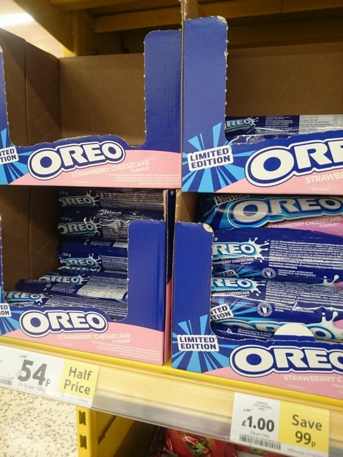
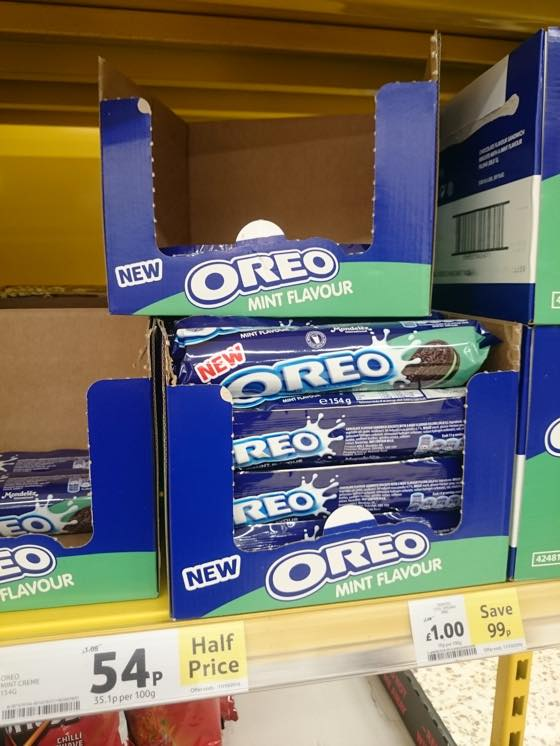
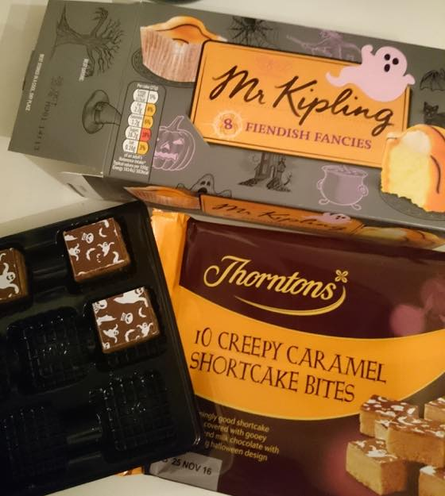

여름에 no snack 이라는 계획을 야심차게 세웠으나
무참히 실패 ㅋㅋㅋㅋ 케키 / 과자 없인 살수없숴 ㅋㅋㅋㅋㅋ
최근 빠져있는 오레오 딸기 (무려 리미티드 에디숑!!!) & 할로윈 겨냥하고 나온 10 크리피 캬라멜 쇼트케이크 바이트 입니다 :3

바닐라 아이스크림에 1-2개 부셔서 섞어먹으면 대따 맛나요 ;ㅂ;

민트는 아직 안먹어봤는데 담에 사봐야겠어용 ㅎㅎ

할로윈 스낵 & 굿즈들이 나오고 있습니다.
Mr.Kipling 미니케키도 맛나고 아래 10 Creepy Caramel Shortcake Bites 이거 넘 좋아////
이틀만에 한판 해치웠습니다........OTL (그리고 또 사러갈거 같은 느낌적느낌이;;;;)
날씨가 점점 추워지네요;; 뜨끈한 양파수프를 먹을시기가 다가오는군욤 :)